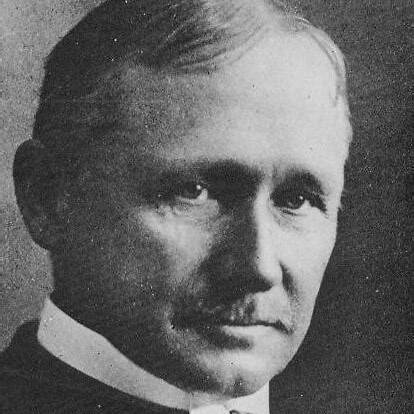
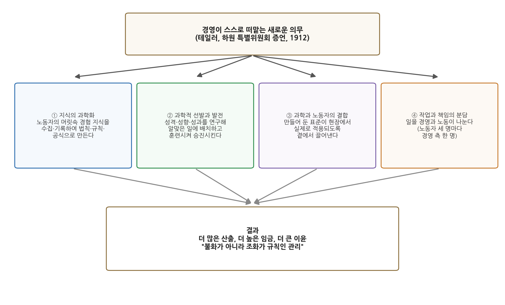
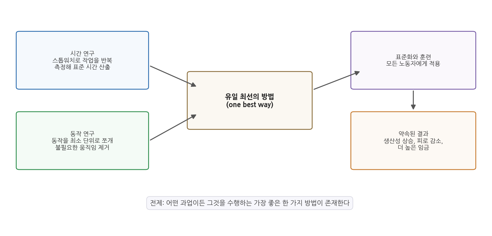

6주차 2차시. 도시문제와 과학적 관리론 (2): 테일러의 과학적 관리
최종 수정: 2026-09-08 · 이 교재는 학기 중에도 계속 업데이트됩니다
과학적 관리는 불화가 아니라 조화가 규칙인 관리라고 정당하게, 그리고 진실하게 말할 수 있습니다. (프레더릭 테일러, 하원 특별위원회 증언, 1912)
이 장에서 배우는 것
1912년 1월, 미국 하원의 한 위원회실. 노동조합의 항의로 소집된 특별위원회 앞에 쉰다섯 살의 전직 엔지니어가 앉아 있다. 그의 이름은 이미 전국에 알려져 있다. 2년 전 철도 운임 인상을 둘러싼 청문회에서 한 변호사가 "이 사람의 관리법을 쓰면 철도 회사들이 하루에 백만 달러를 절약할 수 있다"고 주장한 뒤로, 신문들은 그를 새로운 시대를 이끌 인물로 크게 다루어 왔다. 공장에서 삽질하는 방법과 선철을 나르는 속도를 스톱워치로 재던 이 남자, 프레더릭 테일러(Frederick W. Taylor)는 이제 의원들 앞에서 자신의 필생의 주장을 변호해야 한다. 관리는 주먹구구가 아니라 과학이 될 수 있다는 주장이다.
1차시에서 우리는 도시 개혁가들이 정부의 일하는 방식을 사실과 수치로 뜯어보기 시작한 과정(시정연구소와 행정조사운동)을 보았다. 같은 시기에, 윌슨이 관리의 과학을 요구하던 바로 그 무렵, 테일러는 필라델피아의 제철소에서 독립적으로 그 과학의 바탕이 될 내용을 만들고 있었다. 공장에서 시작된 그의 "과학적 관리"는 곧 공공부문으로 확산되어 정부 개혁의 언어가 되었고, 행정학 초기의 방향을 결정지었다. 이 장에서는 다음을 배운다.
- 테일러가 왜 노동자의 "태업"에서 문제를 발견했는지
- "과학적 관리"라는 이름이 만들어지고 복음처럼 퍼진 과정
- 1912년 하원 증언 원전으로 읽는 과학적 관리의 4원칙
- 시간 연구와 동작 연구, 그리고 "유일 최선의 방법"이라는 전제
- 과학적 관리가 오늘날의 성과관리·표준화에 남긴 유산과 테일러주의 비판
이 장은 하나의 질문을 따라 전개된다. "일하는 방법이 과학이 될 수 있다면, 조직과 행정은 어떻게 달라지는가?"
2.1 테일러의 생애와 "능률의 복음"이 퍼진 배경을 본다 → 2.2 1912년 하원 증언을 원전으로 읽는다 (과학적 관리의 4원칙) → 2.3 시간·동작 연구와 "유일 최선의 방법"의 논리를 뜯어본다 → 2.4 성과관리와 표준화라는 유산, 그리고 테일러주의 비판을 살핀다.
2.1 테일러와 능률의 복음

인물 · 프레더릭 W. 테일러(Frederick W. Taylor, 1856-1915)1856년 필라델피아 저먼타운의 퀘이커 법률가 집안에서 태어났다. 필립스 엑서터 아카데미를 마치고 1874년 하버드 입학시험에 합격했으나 시력이 나빠져 진학을 포기하고, 필라델피아의 기계공장에서 4년간 견습공으로 일했다. 1878년 미드베일 제철소에 말단으로 들어가 기계공과 직장을 거쳐 수석 엔지니어에 이르렀고, 그사이 스티븐스 공과대학의 통신 과정으로 1883년 기계공학 학위를 받았다. 1890-93년 제조투자회사 총지배인을 거쳐 1893년 필라델피아에서 경영 컨설팅을 시작했다. 1898년 베들레헴 제철에서 모운셀 화이트와 함께 고속도강 공정을 개발했으나 1901년 회사를 떠났다. 1906년 미국기계공학회 회장에 선출되었고 펜실베이니아대학 명예 이학박사가 되었다. 1912년 하원 특별위원회에 출석해 자신의 관리 체계를 변론했고, 1915년 쉰아홉 번째 생일 이튿날 폐렴으로 세상을 떠났다.
대표 저술: 「성과급제(A Piece Rate System)」(1895), 『공장 관리(Shop Management)』(1903), 『과학적 관리의 원칙』(1911)
사진: 퍼블릭 도메인
스톱워치를 든 엔지니어
프레더릭 테일러(Frederick W. Taylor, 1856-1915)는 펜실베이니아주 필라델피아에서 태어났다. 유복한 집안 출신으로 하버드 진학이 예정되어 있었으나 진로를 바꾸어 공장의 견습 기계공으로 사회생활을 시작했고, 필라델피아의 미드베일 제철소에서 기계공에서 감독자로 빠르게 승진하며 현장 경험을 쌓았다. 감독자가 된 테일러의 눈에 들어온 것은 공장의 이상한 실태였다. 작업 방법은 사람마다 제각각이고, 하루에 얼마나 하는 것이 적정한 일인지는 아무도 모르며, 노동자들은 눈에 띄지 않게 천천히 일한다. 관리자는 경험과 어림짐작, 곧 경험적 규칙(rule of thumb)으로 일을 시킬 뿐이다.
테일러는 노동자들이 일부러 느리게 일하는 관행을 태업(soldiering)이라 불렀다. 훗날 『과학적 관리의 원칙(The Principles of Scientific Management)』(1911)에서 그는 사람이 천성적으로 편하게 일하려는 성향(천성적 태업)보다 훨씬 심각한 것은 체계적 태업(systematic soldiering), 곧 노동자들이 서로 약속이나 한 듯 조직적으로 작업 속도를 늦추는 관행이라고 진단했다. 테일러가 보기에 그 원인은 노동자의 게으름이 아니라 잘못된 믿음과 잘못된 제도에 있었다. 생산량이 늘면 그만큼 동료의 일자리가 없어진다는 믿음, 열심히 일해서 산출이 늘면 사용자가 곧 임금 단가를 깎아 버리더라는 경험, 그리고 무엇이 적정한 하루 작업량인지 아무도 과학적으로 모른다는 사실이 겹쳐, 천천히 일하는 것이 노동자에게 합리적인 선택이 되어 있었던 것이다. 문제가 제도라면 답도 제도다. 테일러는 작업의 적정량과 최선의 방법을 측정으로 확정하고, 그것을 높은 임금과 묶는 새로운 관리 체계를 평생에 걸쳐 설계했다.
"과학적 관리"라는 이름의 탄생
흥미롭게도 "과학적 관리(scientific management)"라는 용어를 만든 사람은 테일러가 아니다. 그 공로는 훗날 연방대법관이 되는 변호사 루이스 브랜다이스(Louis D. Brandeis, 1856-1941)에게 있다. 1910년 주간상업위원회에서 철도 운임 인상에 반대하는 논변을 펴던 브랜다이스는 테일러와 그 제자들의 새로운 관리 기법을 부를 인상적인 이름이 필요했고, 철도가 이 "과학적 관리"를 도입하면 하루에 백만 달러를 절약할 수 있다고 극적으로 주장했다. 대대적으로 보도된 이 청문회는 큰 파장을 일으켰고 테일러의 명성을 단숨에 끌어올렸다. 정작 테일러 자신은 처음에 이 표현이 너무 학문적으로 들린다며 거부했으나 곧 받아들였고, 미국 사회도 마찬가지였다. 20세기 전반기 동안 과학적 관리는 복음(gospel)과 같았고, 테일러는 그 예언자였다.
능률의 복음은 공공부문으로도 확산되었다. 1차시에서 본 시정연구소가 시 정부의 예산과 사업을 조사할 때 기대던 발상이 바로 이것이었고, 정부 개혁과 예산·인사 제도 개편에도 테일러식 사고가 반영되었다. 그리고 1912년, 미 하원 특별위원회가 테일러 시스템과 여러 작업 관리 제도를 조사하면서 테일러는 공적인 논쟁의 중심에 서게 된다. 우리가 이 장에서 읽는 원전이 바로 이 증언의 일부다.
과학적 관리(scientific management)는 작업을 측정과 분석으로 연구하여 가장 효율적인 표준 방법을 찾아내고, 노동자를 과학적으로 선발·훈련하여 그 표준에 따라 일하게 하며, 관리자와 노동자가 일과 책임을 나누어 맡는 관리 체계다. 어떤 과업이든 그것을 수행하는 "가장 좋은 한 가지 방법(one best way)"이 존재한다는 전제 위에 서 있다.
한 가지 미리 말해 둘 것이 있다. 테일러 자신은 『과학적 관리의 원칙』에서 과학적 관리가 "위대한 발명이나 새로운 발견이 아니"라고 강조했다. 그것은 "오래된 지식을 수집하고 분석하고 분류하여 법칙과 규칙으로 체계화함으로써 하나의 과학을 구성하게 된 것", 곧 과거에는 없었던 요소들의 결합이라는 것이다. 이 겸손해 보이는 자기규정 속에 과학적 관리의 본질이 들어 있다. 새로운 기계가 아니라 지식을 다루는 새로운 방식이 핵심이라는 것이다.
2.2 원전 강독: 테일러의 1912년 하원 증언 「과학적 관리」
이제 원전을 읽자. 증언에서 테일러는 과학적 관리를 그 이전까지 가장 훌륭하다고 여겨진 관리 방식, 곧 "자발성과 유인(initiative and incentive)"의 관리와 견주는 데서 출발한다. 좋은 유인을 주고 노동자의 분발을 기다리는 방식으로는 부족하며, 경영이 스스로 네 가지 새로운 의무를 떠맡아야 한다는 것이 증언 전체의 골자다.
강독 1: 자발성을 기다리는 관리를 넘어서
"제가 여러분께 증명하고 싶은 것은 이것입니다. 과학적 관리의 원칙이 올바르게 적용되고 진정으로 효과를 내도록 충분한 시간이 주어진다면, 어느 경우에나 사용자와 노동자 양측 모두에게, 지금까지 설명해 온 매우 드문 유형의 관리 방식, 곧 '자발성과 유인'에 의한 관리보다 훨씬 크고 나은 결과를 반드시 낳는다는 점입니다. (…) 과학적 관리가 갖는 첫 번째 큰 장점은, 노동자들의 자발성, 곧 성실한 노동과 선의와 창의력을 거의 어김없이 규칙적으로 얻는다는 데 있습니다. 이전의 가장 훌륭한 관리 아래에서도 이 자발성은 산발적이고 다소 불규칙하게만 얻을 수 있었습니다. 그러나 훨씬 더 큰 이익은, 경영 측이 스스로 떠맡는 새롭고 매우 크고 비범한 부담과 의무에서 나옵니다."
무슨 말인가. "자발성과 유인"의 관리란 경영이 노동자에게 큰 유인(높은 임금, 승진, 배려)을 제공하고, 그에 보답하는 노동자의 분발을 기다리는 방식이다. 테일러는 이것이 당시로서는 가장 훌륭한 관리였음을 인정한다. 그러나 이 방식의 성과는 노동자가 마음을 내는가에 달려 있어 산발적이고 불규칙하다. 과학적 관리의 핵심 차이는 유인의 크기가 아니라 책임의 이동이다. 좋은 성과의 책임을 노동자의 선의에 맡기지 않고, 경영이 새로운 의무를 떠맡음으로써 구조적으로 보장한다는 것이다.
왜 중요한가. 이 대목은 과학적 관리에 대한 흔한 오해, 곧 "노동자를 더 쥐어짜는 기법"이라는 이해와 테일러의 자기 이해가 얼마나 다른지 보여 준다. 테일러의 논리 안에서 더 무거워지는 쪽은 오히려 경영이다. 관리란 지시하고 기다리는 일이 아니라 그 자체가 연구와 책임의 노동이라는 발상, 여기서 관리학과 행정학이 학문으로 설 자리가 생긴다.
강독 2: 제1원칙, 노동자의 머릿속 지식을 과학으로
"첫 번째 의무는, 과거에는 노동자들의 머릿속에, 그리고 오랜 경험으로 몸에 익힌 기술과 요령 속에 들어 있던 방대한 전통 지식을 경영 측이 의도적으로 수집하는 것입니다. 이 전통 지식 전체를 모으고 기록하고 표로 만들며, 많은 경우 최종적으로 법칙과 규칙, 나아가 수학 공식으로까지 환원하는 의무를 과학적 관리자들이 스스로 떠맡습니다. (…) 그 결과는 언제나 다음과 같습니다. 첫째, 노동자 한 사람의 산출이 훨씬 많아지고 질도 좋아집니다. 둘째, 회사는 노동자들에게 훨씬 높은 임금을 지급할 수 있게 됩니다. 셋째, 회사는 더 큰 이윤을 얻습니다. 따라서 첫 번째 원칙은 노동자들의 낡은 경험적 지식을 대신할 과학의 개발이라고 부를 수 있습니다."
무슨 말인가. 공장에서 일을 실제로 어떻게 하는지에 관한 지식은 그때까지 노동자 개개인의 머리와 손에만 있었다. 그 지식은 종종 매우 정확했지만 기록되지 않았고, 사람이 떠나면 함께 사라졌으며, 사람마다 달랐다. 제1원칙은 이 흩어진 경험 지식을 조직의 지식으로 바꾸는 작업이다. 모으고, 기록하고, 표로 만들고, 법칙으로 다듬는다. 오늘날의 말로 하면 암묵지를 형식지로 전환하는 지식 관리이고, 업무 매뉴얼과 표준의 탄생이다.
왜 중요한가. 이 원칙에는 중요한 이면이 있다. 지식이 노동자의 머릿속에 있는 한 작업의 주도권은 노동자에게 있다. 지식이 경영의 장부로 옮겨 가면 주도권도 함께 옮겨 간다. 테일러는 이를 모두를 위한 진보로 제시했지만, 노동조합이 테일러 시스템에 격렬히 저항한 이유도 정확히 여기에 있었다. 숙련의 가치가 해체되고 노동자가 표준의 실행자로 재배치되기 때문이다. 같은 원칙이 보는 자리에 따라 과학이 되기도 하고 통제가 되기도 한다.
증언에서 테일러는 "과학"이라는 말이 삽질과 벽돌쌓기 같은 사소한 일에 쓰이는 것을 대학교수들이 못마땅해한다는 반론을 소개한 뒤, 보스턴 공과대학(현 MIT) 맥로린 총장의 정의를 빌려 응수한다. 과학이란 "어떤 종류의 분류되고 조직된 지식"이라는 것이다. 노동자들의 머릿속에 분류되지 않은 채 있던 지식을 수집해 법칙과 규칙과 공식으로 정리하는 일은 분명 지식의 조직과 분류다. 실험실이나 흰 가운 같은 외형이 아니라 지식을 다루는 방식이 과학을 과학으로 만든다는 이 실용적 과학관은, 관리와 행정처럼 일상적인 활동도 과학적 연구의 대상이 될 수 있다는 선언이었다. 행정학이 "관리의 과학"을 자처할 수 있게 된 데에는 이 선언의 영향이 컸다.
강독 3: 제2원칙, 사람을 과학적으로 뽑고 기른다
"두 번째 의무는 노동자를 과학적으로 선발하고 단계적으로 발전시키는 것입니다. 경영 측은 노동자 한 사람 한 사람의 성격과 성향과 성과를 면밀히 연구하여, 한편으로는 그의 한계를, 다른 한편으로는 그보다 중요한 그의 발전 가능성을 찾아내야 합니다. 그리고 체계적으로 그를 훈련시키고 돕고 가르쳐서 될 수 있는 대로 승진의 기회를 주고, 마침내 타고난 능력에 맞는 가장 수준 높고 흥미롭고 벌이도 좋은 일을 맡도록 해야 합니다. 이 과학적 선발과 발전은 한 번으로 끝나는 행사가 아니라 해마다 이어지는, 경영이 끊임없이 연구해야 할 주제입니다."
무슨 말인가. 제1원칙이 일의 과학이라면 제2원칙은 사람의 과학이다. 아무 일에나 아무나 배치하는 것이 아니라, 각자의 성향과 능력을 연구해 맞는 일에 배치하고, 훈련과 승진으로 계속 길러야 한다. 주목할 것은 테일러가 한계보다 발전 가능성을 찾는 일이 더 중요하다고 말하는 대목, 그리고 선발과 육성이 일회성 행사가 아니라 연중 계속되는 경영의 연구 주제라고 못 박는 대목이다.
왜 중요한가. 여기서 현대 인사행정의 기본 틀이 보이기 때문이다. 직무에 맞는 사람을 검증해 뽑고(선발), 교육훈련으로 기르고(개발), 능력에 따라 승진시키는(경력 관리) 일련의 체계는 4주차에서 본 실적주의의 문제의식과 만나 인사행정론으로 자라난다. 물론 그 이면도 함께 보아야 한다. 사람을 성격·성향·성과로 측정하고 분류한다는 발상은, 사람을 직무에 맞추어 다룬다는 뜻이기도 하다.
강독 4: 제3원칙, 과학과 노동자를 결합시킨다
"세 번째 원칙은 과학과, 과학적으로 선발되고 훈련된 노동자를 결합시키는 것입니다. 굳이 '결합'이라는 말을 쓰는 이유가 있습니다. 아무리 과학을 발전시키고 아무리 노동자를 잘 선발하고 훈련해도, 누군가가 과학과 노동자를 맺어 주지 않으면 모든 수고가 헛되기 때문입니다. 우리는 누구나 대체로 자기에게 맞는 방식대로 일하려 합니다. 곁에서 지켜보며 과학의 원리에 맞게 일하도록 이끌어 주는 사람이 없다면 말입니다. (…) 실제로 구식 관리에서 과학적 관리로 넘어가는 일을 도울 때, 문제의 십중팔구는 경영 측이 제 몫을 다하도록 '끌어내는 것'이었고, 노동자 쪽의 반대는 십분의 일에 지나지 않았습니다."
무슨 말인가. 표준을 만들고(제1원칙) 사람을 준비시켜도(제2원칙), 그 둘이 현장에서 실제로 만나지 않으면 아무 일도 일어나지 않는다. 사람은 누구나 하던 대로 일하려 하기 때문이다. 제3원칙은 이 실행의 간극을 메우는 일상적 지도와 지원이다. 그런데 테일러는 여기서 뜻밖의 증언을 한다. 새 제도 도입에서 저항의 십중팔구는 노동자가 아니라 경영 쪽에서 나왔다는 것이다. 노동자에게는 표준을 따르라고 요구하면서 정작 자신의 일하는 방식은 바꾸지 않으려는 관리자들이 가장 큰 장애물이었다.
왜 중요한가. 아무리 좋은 제도 설계도 집행되지 않으면 문서에 그친다는 것, 그리고 변화에 대한 가장 큰 저항은 흔히 조직의 윗부분에서 나온다는 것. 이 두 통찰은 오늘날 정책 집행 연구와 행정 개혁의 경험이 거듭 확인해 온 명제다. 정부 혁신이 "위에서 시키고 아래만 바뀌는" 방식으로 실패하는 사례는 테일러가 이미 확인한 문제의 반복이다.
강독 5: 제4원칙, 일과 책임을 나누어 맡는다
"네 번째 원칙은 아마 보통 사람에게 가장 이해하기 어려운 원칙일 것입니다. 사업장의 실제 작업을 노동자와 경영자가 거의 똑같이 나누어 맡는다는 것입니다. 구식 관리에서는 거의 모든 일을 노동자가 수행했지만, 새로운 관리에서는 일이 두 부분으로 크게 나뉘고 그중 한 부분을 경영이 맡습니다. (…) 예컨대 다양한 기계를 설계하고 제작하는 기계공장에서는 노동자 세 명마다 경영 측 사람 한 명이 있습니다. 전체 작업의 삼분의 일이 노동자의 손에서 경영 측으로 옮겨 간 것입니다. 바로 이 실질적인 분담 덕분에 과학적 관리 아래에서는 파업이 거의 없었습니다. 하루 종일 노동자가 무언가 하면 경영이 무언가 하고, 경영이 무언가 하면 노동자가 무언가 합니다. (…) 양측 모두 이 밀접하고 형제 같은 협력 없이는 작업장을 올바른 속도로 정확하게 운영할 수 없음을 깨닫게 되면, 마찰과 다툼은 최소한으로 줄어듭니다. 따라서 과학적 관리는 불화가 아니라 조화가 규칙인 관리라고 정당하게, 그리고 진실하게 말할 수 있습니다."
무슨 말인가. 구식 관리에서 관리자는 일을 시키는 사람이고 노동자는 일을 하는 사람이었다. 제4원칙은 이 구도를 바꾼다. 계획, 측정, 준비, 지도 같은 작업의 삼분의 일가량을 경영이 자기 몫의 노동으로 떠맡는다. 테일러는 이 분담이 만들어 내는 상시적 협력이야말로 분쟁을 구조적으로 줄이는 장치라고 주장하며, 이 장의 도입 인용구인 "조화가 규칙인 관리"로 증언의 이 대목을 맺는다.
왜 중요한가. 계획과 집행의 분리라는, 고전적 조직이론의 핵심 설계 원리가 여기서 형성되기 때문이다. 생각하는 부문(기획실, 참모)과 실행하는 부문(현장, 계선)을 나누는 조직 설계는 이후 행정 조직에 깊이 자리 잡았고, 9주차에서 볼 귤릭의 조직이론으로 정교화된다. 동시에 비판도 여기서 시작된다. 계획에서 배제된 실행은 생각 없는 노동이 되기 쉽다는 비판, 그리고 조화의 언어가 실제로는 위계의 언어가 아니냐는 물음이다.

그림 6-3은 증언의 골자를 한 장으로 정리한 것이다. 맨 위 상자가 출발점이다. 네 원칙은 노동자에게 부과되는 규율 목록이 아니라 경영이 스스로 떠맡는 의무 목록으로 제시되었다. 아래 네 상자가 그 의무들이고, 넷이 함께 작동할 때 맨 아래의 결과, 곧 더 많은 산출과 더 높은 임금과 더 큰 이윤, 그리고 조화가 나온다는 것이 테일러의 주장이다. 이 그림에서 알 수 있는 것은 네 원칙이 병렬적 항목이 아니라 하나의 체계라는 점이다. 지식을 만들고(①), 사람을 준비시키고(②), 둘을 결합하고(③), 그 전 과정을 경영과 노동이 나누어 맡는다(④).
강독 6: 야구팀, 과학적 관리의 가장 좋은 예
"과학적 관리 원칙이 적용된 예 가운데 우리 모두에게 익숙한 것이 하나 있습니다. 아마 가장 좋은 예일 것입니다. 바로 일류 미국 야구팀의 관리입니다. (…) 야구장에서 선수가 하는 작은 동작 하나하나에 대해 그것을 수행하는 과학이 개발되었습니다. 야구의 모든 요소가 여러 사람의 면밀하고 철저한 연구 대상이 되었고, 마침내 각 동작을 수행하는 최선의 방법이 나라 전체의 표준으로 확립되었습니다. 선수들은 그 방법을 말로만 전해 듣는 것이 아니라 여러 달의 훈련을 통해 배우고 지도받고 단련됩니다. 일류 경기를 본 사람이라면 누구나 압니다. 아무리 뛰어난 선수만 모은 최고의 팀이라도, 코치의 신호와 명령에 즉시 따르지 않는다면, 곧 팀 전체와 경영진의 밀접한 협력이 없다면 절대 이길 수 없다는 것을. 바로 이것이 과학적 관리의 특징입니다."
무슨 말인가. 낯설고 위협적으로 들리는 자신의 체계가 사실은 청중 모두가 사랑하는 야구팀에서 이미 구현되어 있다는 논변이다. 투구와 타격의 동작은 연구되어 표준이 되었고(제1원칙), 선수는 재능을 보고 뽑아 몇 달씩 훈련시키며(제2원칙), 코치는 훈련장과 경기장에서 표준과 선수를 결합시키고(제3원칙), 작전과 지휘라는 몫을 경기의 일부로 수행한다(제4원칙). 스타 선수를 모아 놓기만 한 팀은 이기지 못한다.
왜 중요한가. 수사의 솜씨 때문만이 아니다. 이 비유는 과학적 관리의 가장 매력적인 측면, 곧 표준과 훈련과 협력이 개인 기량의 단순 합을 넘어서는 팀을 만든다는 주장을 생생하게 보여 준다. 동시에 비유의 한계가 곧 이론의 한계라는 점도 생각해 볼 만하다. 야구 선수는 이기고 싶다는 목표를 코치와 공유하지만, 공장 노동자와 사용자의 이해가 늘 그렇게 일치하는가. 목표가 공유되지 않은 곳에서 신호와 명령의 체계는 조화가 아니라 통제로 경험될 수 있다.
같은 1912년 증언에서 테일러는 과학적 관리의 본질이 스톱워치나 성과급 같은 장치가 아니라고 강조했다. 그것은 노동자와 경영자 양측의 완전한 정신혁명(complete mental revolution)이라는 것이다. 핵심은 시선의 이동이다. 이미 만들어진 잉여를 어떻게 나눌지 다투는 대신, 양측이 협력하여 잉여 자체를 키우는 데로 눈을 돌리면 분배를 둘러싼 싸움이 무의미해질 만큼 나눌 몫이 커진다는 주장이다. 테일러 자신이 기법의 목록보다 이 정신의 전환을 과학적 관리의 정수로 꼽았다는 사실은, 그를 단순한 효율 기술자로 기억하는 통념을 교정해 준다. 물론 노사의 이해가 과연 그렇게 조화될 수 있는지는 당시에도 지금도 논쟁거리다.
2.3 시간·동작 연구와 "유일 최선의 방법"
측정이 만드는 표준
과학적 관리의 방법론적 핵심은 시간 연구와 동작 연구다. 시간 연구(time study)는 하나의 작업을 여러 차례 관찰하고 스톱워치로 측정하여 그 일에 필요한 표준 시간을 산출하는 기법이다. 불필요한 지연을 걷어 내고 적정한 하루 작업량을 어림짐작이 아닌 측정으로 확정한다. 동작 연구(motion study)는 작업을 이루는 세부 동작 하나하나를 최소 단위로 쪼개 분석하여, 불필요한 움직임을 제거하고 효율적인 동작만 남기는 기법이다. 숙련공과 미숙련공의 동작을 비교하거나 작업을 촬영·관찰하는 방식이 쓰였다.
두 연구가 낳은 성과담은 당대에 널리 회자되었다. 베들레헴 제철소에서 테일러는 선철(무쇠 덩이) 운반 작업을 연구하여, 일과 휴식을 과학적으로 배합하면 노동자가 몸을 상하지 않고도 하루 운반량을 12.5톤에서 47톤 수준까지 늘릴 수 있음을 보였고, 해당 노동자의 임금도 크게 올랐다고 보고했다. 벽돌쌓기를 연구한 테일러의 동료 프랭크 길브레스(Frank Gilbreth)는 벽돌공의 동작을 분석해 벽돌 하나를 쌓는 동작을 18개에서 5개로 줄였고, 작업 속도를 몇 배로 높였다. 발판의 높이를 조절해 몸을 굽히는 동작을 없애는 식의, 지금 보면 당연하지만 당시에는 아무도 측정해 보지 않았던 개선이었다.

그림 6-4는 이 방법론의 흐름을 보여 준다. 왼쪽의 시간 연구와 동작 연구가 가운데의 "유일 최선의 방법"을 도출하고, 그것이 오른쪽처럼 표준화와 훈련을 거쳐 모든 노동자에게 적용되며, 생산성 상승·피로 감소·고임금이라는 약속된 결과로 이어진다. 이 그림에서 눈여겨볼 것은 맨 아래의 전제 상자다. 이 흐름 전체는 어떤 과업이든 가장 좋은 한 가지 방법이 존재한다는 가정 위에서만 성립한다. 측정과 표준화가 아무리 정교해도, 이 전제가 흔들리면 체계 전체가 흔들린다.
하나의 최선이 있다는 믿음
"유일 최선의 방법"이라는 전제는 과학적 관리를 넘어 훨씬 넓은 영역으로 확장되었다. 어떤 생산 과업에 가장 좋은 한 가지 방법이 존재한다면, 사회 조직의 과업을 수행하는 가장 좋은 한 가지 방법도 존재하지 않겠는가. 조직의 원리들은 이미 존재하며 근면한 과학적 관찰과 분석으로 발견되기를 기다린다고 여겨졌다. 고전 조직이론은 바로 이 확장 위에서 발전했고, 7주차의 관료제 이론과 9주차의 조직 원리 탐구가 그 결과다. 그리고 훗날 10주차에서 사이먼은 정확히 이 지점, 곧 "발견되기를 기다리는 유일한 원리들"이라는 믿음을 겨냥해 고전이론 전체에 대한 근본적 비판을 제기하게 된다.
오늘날 과학적 관리는 흔히 의사과학적 관리, 곧 과학을 흉내 낸 관리라고 불리기도 한다. 인간을 기계의 연장, 거대한 비인격적 생산 기계의 교환 가능한 부품으로 간주했기 때문이다. 측정된 것은 동작과 시간이었을 뿐, 일의 의미, 동료 관계, 감정과 존엄은 측정 바깥에 있었다. 이 비판은 이후 인간관계론과 행동과학의 발전을 자극했다. 다만 비판과 원전을 함께 읽어야 공정하다. 원전에서 보았듯 테일러 자신은 노사 양측의 번영과 조화, 노동자의 발전과 고임금을 체계의 목적으로 내세웠다. 문제는 그 선의가 아니라, 인간의 어떤 부분은 측정으로 포착되지 않는다는 사실이었다.
2.4 현대 행정에의 함의: 성과관리·표준화와 테일러주의 비판
테일러의 유산은 어디에나 있다
테일러의 이름을 모르는 공무원도 매일 테일러의 유산 속에서 일한다. 업무 매뉴얼과 표준운영절차는 제1원칙(지식의 조직화)에서 이어진 것이고, 직무 분석에 기반한 채용과 역량 평가, 체계적 교육훈련은 제2원칙(과학적 선발과 발전)에서 이어진 것이다. 성과지표(KPI)를 정해 측정하고 그 결과로 조직과 개인을 평가하는 성과관리, 정부업무평가나 공공기관 경영평가 같은 제도들은 측정이 관리를 개선한다는 테일러의 근본 믿음 위에 서 있다. 1차시에서 본 시정연구소의 행정조사운동이 과학적 관리를 정부에 이식하는 첫 통로였다면, 20세기 후반의 신공공관리 개혁은 성과 측정과 표준화의 언어로 그 믿음을 다시 내세웠다.
측정과 표준화가 이룬 성취는 부정하기 어렵다. 표준이 있어야 자의적 행정을 통제할 수 있고, 측정이 있어야 "열심히 했다"는 말 대신 근거로 평가할 수 있으며, 매뉴얼이 있어야 담당자가 바뀌어도 행정의 질이 유지된다. 시민의 처지에서 보면, 어느 창구에서나 같은 기준으로 처리되는 행정은 테일러적 표준화가 시민에게 주는 이점이다.
테일러주의 비판: 측정이 놓치는 것
그러나 비판의 목록도 그만큼 길다. 첫째, 인간의 문제다. 과학적 관리는 인간을 표준의 실행자로 다루었고, 일의 의미와 자율성, 비공식 관계가 성과에 미치는 영향을 보지 못했다. 이 공백을 파고든 것이 인간관계론이며, 조직 연구는 이후 측정 가능한 동작 너머의 인간을 재발견하는 방향으로 움직였다.
둘째, 측정의 문제다. 성과관리는 측정할 수 있는 것을 관리하지만, 행정에서 중요한 것이 모두 측정되지는 않는다. 지표가 목표를 대신 차지하는 순간, 단속 건수를 채우기 위한 단속, 통계를 위한 실적 같은 왜곡이 나타난다. 수단이었던 규칙과 지표가 목적이 되어 버리는 이 전도 현상은 10주차에서 머튼의 목표 대치 개념으로 정면으로 다룬다.
셋째, 전제의 문제다. "유일 최선의 방법"은 과업이 단순하고 반복적이며 환경이 안정적일 때 성립하기 쉬운 가정이다. 문제가 복잡하고 가치가 충돌하는 행정의 영역, 예컨대 복지 상담이나 갈등 조정에서는 최선의 방법이 하나로 수렴하지 않는다. 표준화할 일과 재량에 맡길 일을 구분하는 감각 자체가 행정가의 역량이 된다.
마지막으로 1차시와의 연결을 되짚어 보자. 애덤스와 테일러는 같은 진보주의 시대가 낳은 두 개혁가지만, 처방의 방향은 정반대였다. 애덤스는 시민의 참여가, 테일러는 전문가의 측정이 좋은 정부를 만든다고 믿었다. 행정의 역사는 이 두 믿음 사이를 오가는 과정이었다 해도 지나치지 않다. 능률을 앞세운 테일러의 노선은 이후 반세기 동안 행정학의 주류가 되지만, 참여와 민주성의 물음은 사라지지 않고 11주차의 왈도와 12주차의 신행정학에서 되돌아온다. 두 차시에서 읽은 두 원전을 나란히 놓고, 여러분이라면 어느 쪽에 동의할지 생각해 보며 이 주를 마치자.
요약
테일러는 필라델피아의 제철소 현장에서 노동자들의 체계적 태업을 관찰하고, 그 원인을 게으름이 아니라 적정 작업량에 대한 과학적 지식의 부재와 잘못된 제도에서 찾았다. 그의 해법인 과학적 관리는 1910년 브랜다이스의 철도운임 청문회에서 이름을 얻어 복음처럼 퍼졌고, 1912년 하원 특별위원회 증언에서 체계적으로 진술되었다. 증언에서 테일러는 유인을 주고 분발을 기다리는 "자발성과 유인"의 관리를 넘어, 경영이 스스로 떠맡는 네 가지 의무를 제시했다. 노동자의 경험 지식을 수집해 법칙과 규칙으로 만드는 지식의 과학화, 노동자의 과학적 선발과 발전, 과학과 노동자의 결합, 그리고 일과 책임의 분담이다. 네 원칙이 함께 작동하면 고생산·고임금·고이윤과 함께 "조화가 규칙인 관리"가 실현된다는 것이 그의 주장이며, 그 본질은 기법이 아니라 노사 양측의 정신혁명이라고 그는 강조했다. 방법론의 핵심인 시간 연구와 동작 연구는 "유일 최선의 방법"이 존재한다는 전제 위에서 작업 표준을 만들었고, 이 전제는 고전 조직이론으로 확장되었다. 과학적 관리는 오늘날의 업무 표준화, 직무 기반 인사, 성과관리 제도에 깊은 유산을 남겼으나, 인간을 측정 가능한 부품으로 다루었다는 비판, 지표가 목표를 대체하는 왜곡, 복잡한 행정 과업에는 유일 최선이 없다는 반론도 함께 남겼다. 참여를 앞세운 애덤스와 측정을 앞세운 테일러의 긴장은 행정학 전체를 관통하는 주제로 이어진다.
토론·복습 문제
6-5. (서술형 연습) 테일러가 1912년 증언에서 제시한 과학적 관리의 4원칙을 각각 설명하고, 네 원칙이 왜 "노동자의 의무"가 아니라 "경영의 의무"로 제시되었는지 그 논리를 논의하시오. (힌트: "자발성과 유인" 방식의 한계에서 출발해 책임의 이동이라는 관점으로 구성해 보라.)
6-6. (원전 해석) 다음 구절을 읽고 물음에 답하시오. "아무리 뛰어난 선수들만 모은 최고의 팀이라도, 코치의 신호나 명령을 받고 즉시 따르지 않는다면 절대 이길 수 없습니다." 테일러가 야구팀 비유로 전달하려 한 주장은 무엇인가. 그리고 공장이나 관청이 야구팀과 다른 점을 들어 이 비유의 한계를 비판해 보시오.
6-7. (개념 적용) 여러분이 접해 본 조직(아르바이트, 동아리, 군대, 학교 행정실 등)에서 테일러의 4원칙 가운데 실제로 작동하고 있는 것과 작동하지 않는 것을 찾아보라. 작동하지 않는 원칙에 대해, 테일러라면 어떤 처방을 내렸을지와 그 처방의 부작용으로 무엇이 예상되는지를 함께 써 보시오.
6-8. (비교·논술) 애덤스(1차시)와 테일러(2차시)는 같은 시대의 문제에 서로 다른 처방을 내렸다. 두 사람이 "좋은 정부"를 어떻게 다르게 정의했는지 비교하고, 오늘날 한국의 성과관리 제도(예: 공공기관 경영평가)에 대해 두 사람이 각각 어떤 논평을 내놓을지 상상하여 서술하시오.